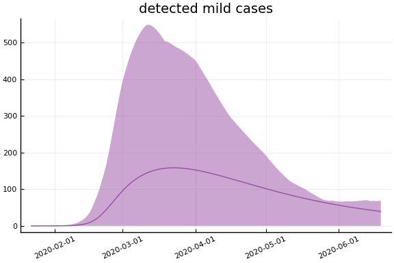
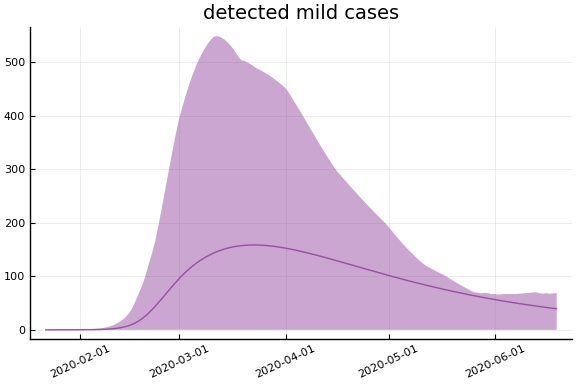
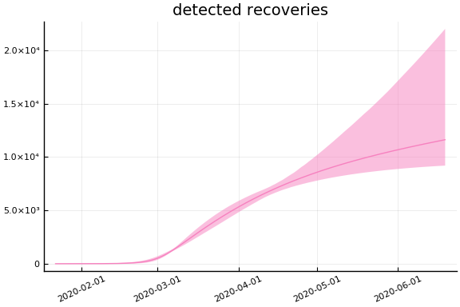
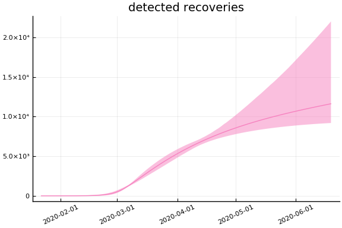

This work is licensed under a Creative Commons Attribution-ShareAlike 4.0 International License
using CovidSEIR, Plots, DataFrames, JLD2, StatsPlots
Plots.pyplot()
jmddir = normpath(joinpath(dirname(Base.find_package("CovidSEIR")),"..","docs","jmd"))
covdf = covidjhudata()
describe(covdf)
11×8 DataFrame. Omitted printing of 2 columns
│ Row │ variable │ mean │ min │ median │ max │ nuni
que │
│ │ Symbol │ Union… │ Any │ Union… │ Any │ Unio
n… │
├─────┼───────────┼───────────┼─────────────┼───────────┼────────────┼─────
────┤
│ 1 │ Date │ │ 2020-01-22 │ │ 2020-03-29 │ 68
│
│ 2 │ confirmed │ 521.072 │ 0 │ 0.0 │ 140886 │
│
│ 3 │ Province │ │ Alberta │ │ Zhejiang │ 79
│
│ 4 │ Country │ │ Afghanistan │ │ Zimbabwe │ 177
│
│ 5 │ Lat │ 22.0528 │ -41.4545 │ 23.8298 │ 71.7069 │
│
│ 6 │ Long │ 23.2675 │ -135.0 │ 20.9394 │ 178.065 │
│
│ 7 │ deaths │ 20.5945 │ 0 │ 0.0 │ 10779 │
│
│ 8 │ recovered │ 168.91 │ 0 │ 0.0 │ 62570 │
│
│ 9 │ iso2c │ │ AD │ │ ZW │ 171
│
│ 10 │ cpop │ 2.2813e8 │ 33785.0 │ 2.49924e7 │ 1.39273e9 │
│
│ 11 │ ppop │ 2.74801e7 │ 41078 │ 1.557e7 │ 111690000 │
│
South Korea¶
korea = CountryData(covdf, "Korea, South")
CountryData{Float64,Int64}(5.1635256e7, [1, 2, 3, 4, 5, 6, 7, 8, 9, 10 …
59, 60, 61, 62, 63, 64, 65, 66, 67, 68], [0.0, 0.0, 0.0, 0.0, 0.0, 0.0, 0.0
, 0.0, 0.0, 0.0 … 94.0, 102.0, 111.0, 111.0, 120.0, 126.0, 131.0, 139.0,
144.0, 152.0], [0.0, 0.0, 0.0, 0.0, 0.0, 0.0, 0.0, 0.0, 0.0, 0.0 … 1540.0
, 1540.0, 2909.0, 2909.0, 3507.0, 3730.0, 4144.0, 4528.0, 4811.0, 5033.0],
[1.0, 1.0, 2.0, 2.0, 3.0, 4.0, 4.0, 4.0, 4.0, 11.0 … 7018.0, 7157.0, 5941
.0, 5941.0, 5410.0, 5281.0, 4966.0, 4665.0, 4523.0, 4398.0])
using Turing
mdl = countrymodel(korea)
cc = Turing.psample(mdl, NUTS(0.65), 2000, 4)
import JLD2
JLD2.@save "$jmddir/korea_$(Dates.today()).jld2" cc
JLD2.@load "$jmddir/korea_2020-03-29.jld2" cc;
Estimates¶
plot(cc)

describe(cc)
2-element Array{MCMCChains.ChainDataFrame,1}
Summary Statistics
parameters mean std naive_se mcse ess r_hat
────────── ──────── ─────── ──────── ────── ───────── ──────
a 0.7445 0.1648 0.0026 0.0030 2659.4445 1.0001
pE0 0.0000 0.0000 0.0000 0.0000 1047.3291 1.0038
p[1] 0.0002 0.0001 0.0000 0.0000 1471.1339 1.0024
p[2] 0.0007 0.0000 0.0000 0.0000 2746.0310 0.9997
sigC 321.1844 41.1352 0.6504 1.1266 1586.5783 1.0008
sigD 4.9647 0.5299 0.0084 0.0116 2646.0062 1.0007
sigRc 589.2263 55.8802 0.8835 0.8144 3247.0897 1.0001
β[1] 1.7364 0.3556 0.0056 0.0085 1625.8561 1.0012
β[2] 0.9517 0.6832 0.0108 0.0092 4596.2642 0.9997
γ[1] 0.8178 0.2412 0.0038 0.0060 1431.9766 1.0022
γ[2] 0.0181 0.0011 0.0000 0.0000 2299.7501 1.0004
τ 0.0000 0.0000 0.0000 0.0000 3772.0254 1.0001
Quantiles
parameters 2.5% 25.0% 50.0% 75.0% 97.5%
────────── ──────── ──────── ──────── ──────── ────────
a 0.4126 0.6183 0.7560 0.8861 0.9893
pE0 0.0000 0.0000 0.0000 0.0000 0.0000
p[1] 0.0001 0.0001 0.0002 0.0002 0.0003
p[2] 0.0007 0.0007 0.0007 0.0007 0.0008
sigC 255.3503 292.9805 315.9003 343.8002 414.9159
sigD 3.9841 4.6058 4.9401 5.2969 6.1085
sigRc 493.2846 550.6845 584.6365 621.8216 714.2856
β[1] 1.1571 1.4793 1.6956 1.9456 2.5213
β[2] 0.0481 0.4002 0.8243 1.3799 2.5147
γ[1] 0.4246 0.6434 0.7912 0.9683 1.3553
γ[2] 0.0158 0.0173 0.0181 0.0188 0.0203
τ 0.0000 0.0000 0.0000 0.0000 0.0000
Fit¶
sdf = simtrajectories(cc, korea, 1:150)
f = plotvars(sdf, korea)
plot!(f.fit, xlim=nothing)

We see that the model does not fit the rapid drop in new cases in South Korea. This may be caused by the model’s implausible assumption that transmission and testing rates are constant over time.
Implications¶
for fig in f.trajectories
display(plot(fig, xlim=nothing))
end


 



 
